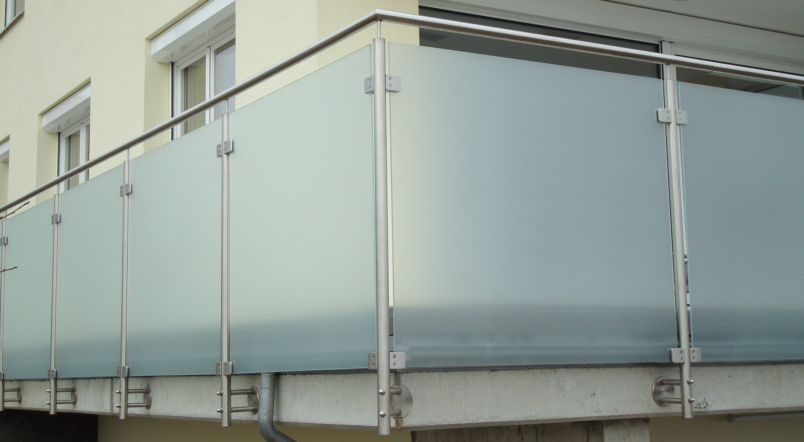
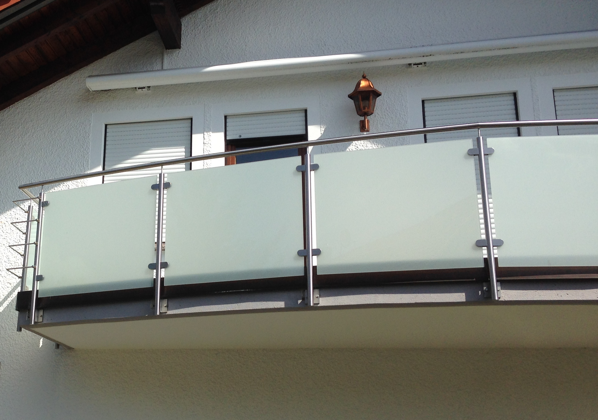
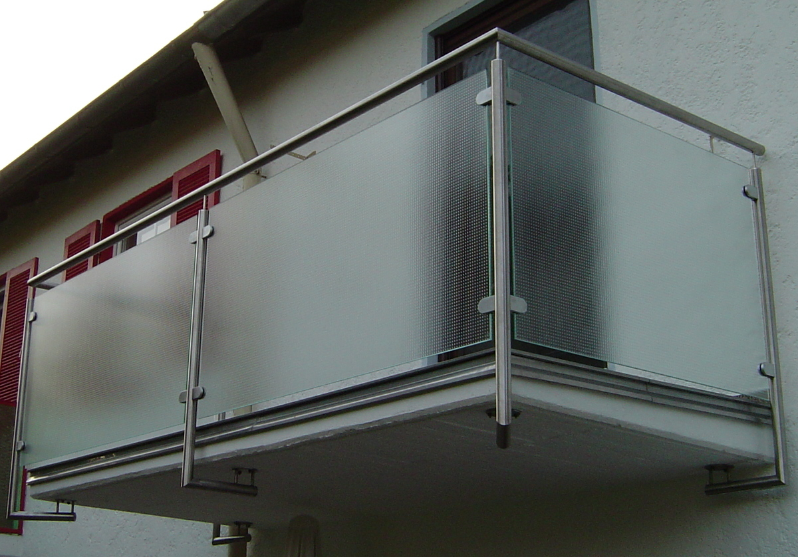
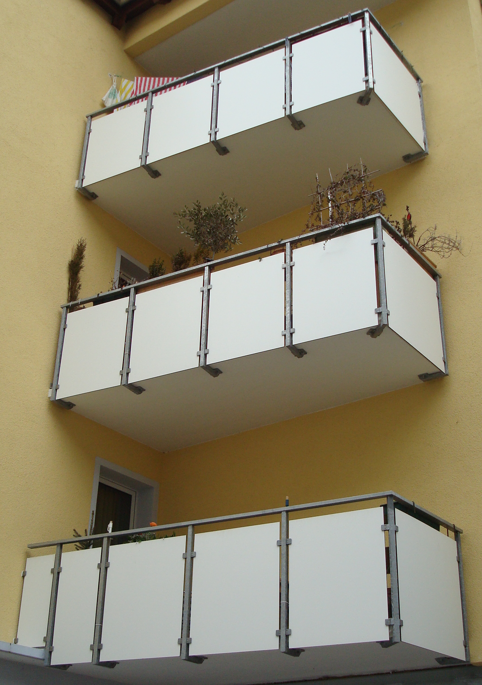
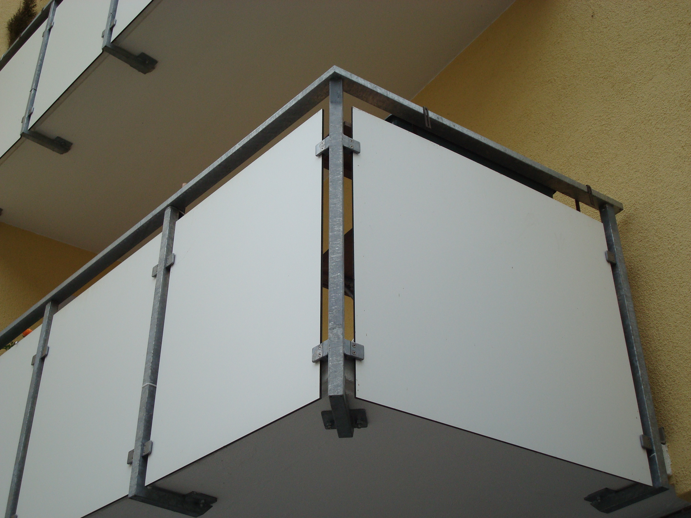
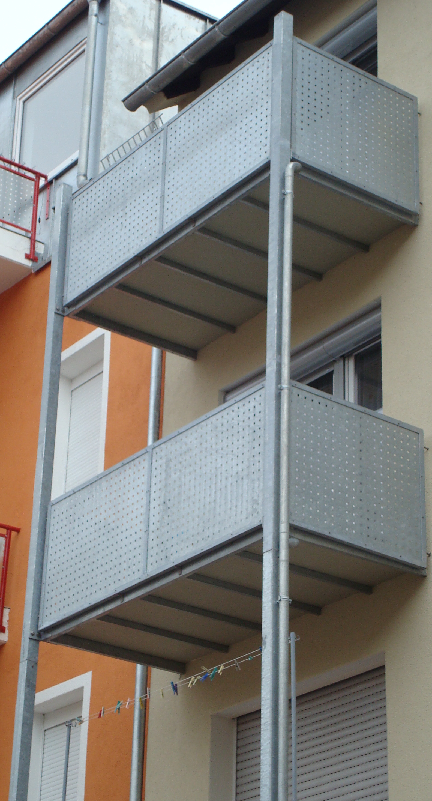

Verzinkter Stahl, Edelstahl oder Aluminium – kombiniert mit Glas, Lamellen oder Trespa-Füllungen. Wir planen, fertigen und montieren maßgeschneiderte Lösungen inklusive Statik und Montage.





